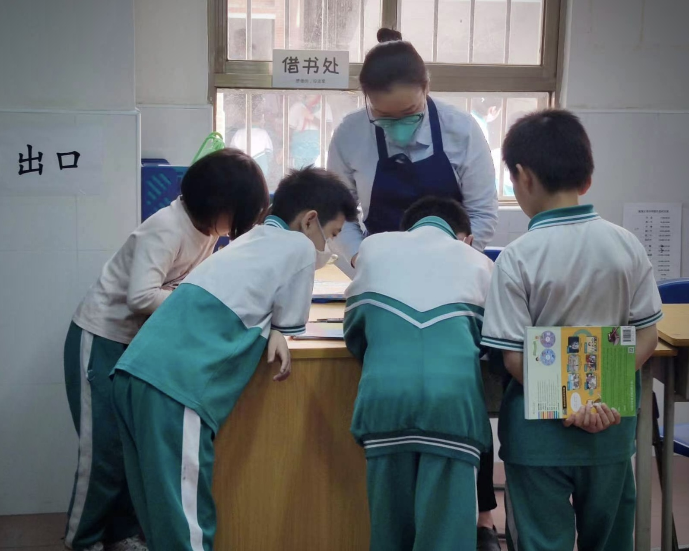

📚 图书馆活动
读懂孩子行为背后的心声。孩子的调皮、沉默、孤僻、叛逆，往往不是"不听话"，而是内心孤单、委屈、无助、不被看见。我以书籍与阅读为纽带，搭建安静、松弛、安全的陪伴空间。
心理学适配逻辑：依托儿童依恋心理、留守儿童心理、行为背后的隐性情绪需求。孩子的调皮、沉默、孤僻、叛逆，往往不是"不听话"，而是内心孤单、委屈、无助、不被看见。我作为组织者，以图书馆为温柔载体，把孩子看不懂的情绪、大人读不懂的行为，双向翻译，让每一个孩子的心事被听见、被善待。
活动落地乡镇小学与城市社区图书馆，面向留守儿童、城市普通学生、全社会志愿者开放参与。不止是借书、捐书、整理书籍，更是读懂孩子、接纳孩子、陪伴孩子，让志愿者看见"问题行为"背后的真实困境，让孩子在阅读与陪伴中获得温暖与力量。

本次我组织志愿者常态化驻守微澜图书馆广州21馆，每两周定点值班，长期开展图书修补、借还登记、阅读引导等志愿服务。志愿者团队涵盖青年学生、职场新人、未婚青年、家长群体等不同身份，大家在长期陪伴中，对孩子的认知发生了彻底改变。
很多志愿者最初会觉得，部分孩子活泼好动、难以管教，是典型的"熊孩子"。但在长期、耐心、持续的陪伴中，大家慢慢读懂：没有无缘无故的调皮，也没有天生难管的孩子。孩子的每一种异常行为背后，都藏着未被看见的困境与委屈。
💡 一个孩子的故事
其中令所有参与者印象深刻的一例：有孩子长期滞留图书馆、迟迟不愿离开，甚至刻意躲避同学。经耐心沟通后得知，孩子因遭遇校园霸凌，将安静的图书馆当作唯一安全的避风港。我征得孩子同意后，协助对接老师沟通处理，尽力为孩子营造安全的校园环境。
这场长期志愿实践，让所有参与者完成了一次重要的认知升级：不要轻易给孩子贴标签、下定义。孩子的沉默、逃避、调皮、叛逆，都是内心情绪的无声表达。我作为组织者，把孩子说不出口的委屈与困惑，翻译给成年人听，让更多人学会看见孩子、理解孩子、善待孩子。

志愿者团队驱车数小时奔赴郁南镇小学，完成图书分拣、贴标、分类、上架全流程，为当地乡村孩子搭建起崭新的小型公益图书馆。参与志愿者来自各行各业，大家放下工作与生活的忙碌，真诚奔赴乡村，为乡村孩子拓宽阅读视野。
现场相处中我们能清晰感受到，当地多数留守儿童不缺物质帮扶，最缺的是陪伴与对外界的向往。孩子们对志愿者充满好奇，主动沟通、主动提问，渴望了解大城市的生活与更广的世界。很多志愿者深受触动，以往大家对留守儿童的认知，只停留在"需要帮助"，真正相处后才读懂，他们更需要的是被看见、被陪伴、被肯定。
这场捐赠不止是送书，更是送希望、送陪伴、送理解。对乡村孩子而言，书籍打开了认知世界的窗口；对志愿者而言，这场实践打破了刻板认知，学会读懂弱势孩子的内心渴望，更懂得珍惜生活、温柔待人。同时我也引导远方家长读懂：孩子的成长，从来不止是物质供给，更需要精神陪伴与情感关注。
在图书馆系列活动中，我是孩子行为与内心的双向翻译官：
• 把「冰冷的书籍」翻译成孩子能触摸到的世界与希望
• 把「孩子的叛逆、孤僻、调皮」翻译成未被看见的委屈与困境
• 把「成年人的刻板评判」翻译成温柔的理解与接纳，让阅读空间成为孩子的心灵避风港